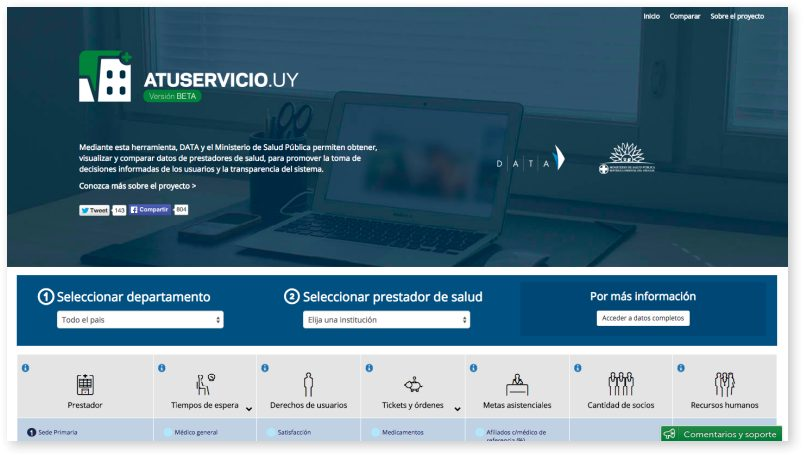
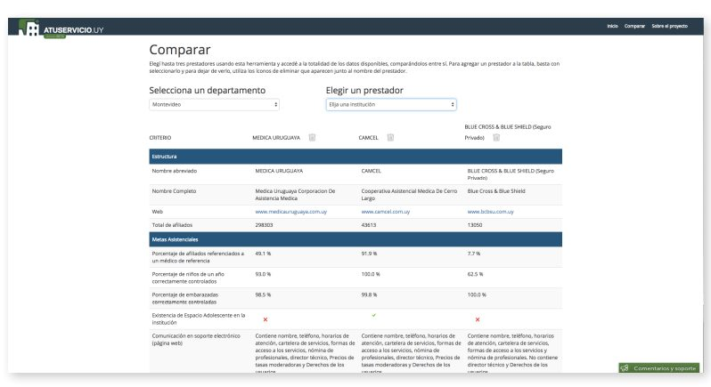

هر ماه فوریه، به شهروندان اوروگوئه این فرصت داده میشود که تصمیم بگیرند آیا باید تغییر کنند یا با ارائهدهندگان مراقبتهای بهداشتی فعلی خود بمانند. در سیستم بهداشت و درمان خصوصی مختلط دولتی این کشور، عوامل متعددی در هنگام تصمیمگیری نقش دارند: محل ارائهدهندگان خدمات بهداشتی، تعداد پزشکان و متخصصان اطفال موجود، ساعات مراجعه و غیره. شهروندان اوروگوئه چگونه میتوانند این تصمیم را بگیرند. تصمیمگیری آگاهانه و دادهمحور در مورد انتخاب ارائهدهندگان خدمات بهداشتی و درمانی؟ Datos Abiertos, Transparencia y Acceso a la Inform (DATA) اروگوئه، یک سازمان جامعه مدنی داده باز، با وزارت بهداشت اروگوئه همکاری کرد تا A Tu Servicio (http://atuservicio.uy)، وب سایتی را ایجاد کند که به راحتی قابل درک و قابل جستجو است. و اینفوگرافیکها را بر اساس دادههای بهداشتی دولت باز تجسم کرد. و اینفوگرافیکها را بر اساس دادههای سلامت دولت باز تجسم کرد. پلتفرم وب به کاربران اجازه میدهد تا مکان خود را انتخاب کرده و سپس ارائهکنندگان خدمات بهداشت و درمان محلی را براساس طیف وسیعی از پارامترها و شاخصها، مانند نوع تسهیلات، تخصص پزشکی، اهداف مراقبت، زمان انتظار و حقوق بیمار مقایسه کنند. توو سروسیو یک الگوی جدید از انتخاب بیمار در بخش بهداشت و درمان اروگوئه معرفی کردهاست که شهروندان را قادر میسازد تا نه تنها از طریق طیف وسیعی از گزینهها حرکت کنند، بلکه یک بحث سالم و آگاهانه در مورد چگونگی بهبود بخش بهداشت و درمان کشور ایجاد کنند.
- اقدامات دادهباز، از جمله اقدامات متمرکز بر مراقبت بهداشتی، از همکاری بین واسطهها - از جمله جامعه مدنی، رسانه و در این مورد، فراهمکنندگان داده مراقبت بهداشتی - و دولت - سود میبرند.
- در حالی که افزایش دسترسی به اطلاعات اولین گام مهم در تلاش برای باز کردن ارزش داده باز است، در دسترس قرار دادن اطلاعات کافی نیست: اطلاعات باید استاندارد، قابل خواندن توسط ماشین و تجسم شوند تا برای شهروندان واقعا مفید باشند.
- پروژههای موفق دادهباز، پتانسیل خاصی دارند و میتوانند به سرعت به بخشها و برنامههای دیگر گسترش یابند، یا در کشورهای دیگر تکرار شوند.
۱. پیشینه و زمینه
با توجه به بارومتر دادهباز، با نرخ نفوذ ۶۰.۵ درصد در اینترنت، کشور اروگوئه به عنوان یک کشور «نوظهور و در حال پیشرفت» در نظر گرفته میشود. اروگوئه از سال ۲۰۱۱ عضو مشارکت حاکمیتی باز (OGP) بوده و در رتبه دوازدهم شاخص دادهی باز بنیاد دانش باز جهانی قرار دارد و آن را به یکی از کشورهای دادهی باز پیشرفتهتر در آمریکایلاتین تبدیل کردهاست. داده ملی از انواع واحدها و سازمانها برای استفاده مجدد از طریق درگاه داده باز ملی (http://www.agesic.gub.uy/)، به رهبری AGESIC، سازمان ملی دولت الکترونیک، در دسترس قرار میگیرد. با شناخت «پتانسیل بزرگ» برای نوآوری اروگوئه در مورد داده باز، بنیاد نور خورشید به تازگی اشاره کرد که چالشهای بسیاری پیش روی کشور قرار دارد، چرا که به دنبال تبدیل تلاشهای داده باز به جریان اصلی و عمل دولت پایدار است. علیرغم این چالشها، مطالعه موردی زیر تاثیر در حال ظهور باز شدن دادههای دولتی اروگوئه را نشان میدهد.
مراقبتهای بهداشتی در اروگوئه از طریق یک چارچوب مختلط دولتی - خصوصی، با بیمهها و بیمارستانهای خصوصی که در کنار یک زیرساخت مراقبتهای بهداشتی عمومی کار میکنند، ارائه میشود. شهروندان میتوانند ارائهدهندگان خدمات درمانی خود را انتخاب کنند. هنگامی که یک فرد به مدت سه سال با یک ارائهدهنده خدمات بودهاست، آنها واجد شرایط تغییر ارائهدهنده خدمات خود در ابتدای فوریه زیر هستند. فابریزیو اسکرولینی، رئیس دادههای باز اروگوئه، اشاره کرد که در نتیجه، ماه فوریه معمولا با بحثهای عمومی و بحث در مورد عواملی که شهروندان را برای انتخاب (یا ترک) یک ارائهدهنده تحتتاثیر قرار میدهند، مشخص میشود. او اضافه میکند که فوریه نیز معمولا با تبلیغات سنگین از سوی ارائهدهندگان مشخص میشود، که بسیاری از آنها «شهروندان را تشویق میکنند که به آنها بپیوندند و دیگران را ترک کنند، و حتی به کاربران بالقوه برای تعویض ارائهدهندگان پول پرداخت کنند.»
در زمانی که یک A Tu Servicio («در سرویس شما») در فوریه ۲۰۱۵ راهاندازی شد، وزارت بهداشت شروع به آزمایش با داده باز، جمعآوری داده خام در مورد کیفیت خدمات از هر ارائهدهنده خدمات و انتشار این داده و سایر دادههای مرتبط با سلامت در سال کرد. بااینحال، به طور کلی ضعیف بود، به طوری که اغلب دادهها به روز نبودند و به اشتراکگذاری دادهها توسط سیستمهای مدیریت اطلاعات ناسازگار با مشکل مواجه بود. دادههای مراقبت بهداشتی در قالبی که به شهروندان اجازه تصمیمگیریهای آگاهانه را میداد، در دسترس نبودند. علاوه بر این، طبق گفته دانیل کارانزا، یکی از بنیانگذاران داده اروگوئه، فشارهای ارائهدهندگان خدمات درمانی رقیب، شهروندان را به «تکیهبر کمپینهای تبلیغاتی و بازاریابی براساس نظر به جای دادههای واقعی» سوق داد.

۲. توصیف و راهاندازی محصول
برای اولین بار در فوریه ۲۰۱۵ توسط داده اروگوئه و وزارت بهداشت به عنوان یک برنامه آزمایشی راهاندازی شد، یک برنامه وب مبتنی بر داده دولت باز است که به راحتی قابل هضم و قابل جستجو است و اطلاعات گرافیکی شاخصهای کلیدی عملکرد مانند نوع تسهیلات، تخصصهای پزشکی موجود، روشهای اجرا شده، زمانهای انتظار، اهداف مراقبت، حقوق بیمار و منابع انسانی را تجسم میکند.
این پلتفرم به کاربران اجازه میدهد تا این شاخصها را در سراسر زمینههای مرتبط با ارائهدهندگان خدمات درمانی در کشور مقایسه کنند، و کاربران را قادر میسازد تا تصمیمات آگاهانه درباره ارائهدهندگان خدمات درمانی خود را از طریق دادههای قابل خواندن توسط ماشین، سازگار و قابلدسترس که قبلا غیرقابلدسترس بودند، بگیرند. برای مثال، کاربران میتوانند ارائهکنندگان خدمات بهداشت عمومی (مانند پزشکی اوروگوئه و CAMCEL) و ارائهکنندگان خصوصی (مانند بلو کراس بلو سپر) را در مونته ویدئو جستجو کنند و دادهها را درباره هزینه کنترل تولد، میانگین زمان انتظار و رضایت بیمار مقایسه کنند. چنین مقایسههایی میتواند به شهروندان این امکان را بدهد که تصمیم بگیرند که آیا با ارائهدهنده فعلی خود باقی بمانند یا به یک ارائهدهنده جدید روی آورند. با این حال، فعال کردن این نوع مقایسه همیشه آسان نبود، چرا که، همانطور که اسکرولینی اشاره میکند، «تامینکنندگان خصوصی در زمان ارسال دادهها به وزارت، بدترین شرایط را از نظر انطباق داشتند.»

این پروژه از یک مشاوره عمومی بین دولت و دادههای اروگوئه، یک سازمان جامعه مدنی داوطلب متعهد به ترویج منابع دادهباز، شفافیت و دسترسی به اطلاعات پدید آمد (http://datauy.org/). در سال ۲۰۱۳، DATA اروگوئه کار خود را با ۱۸۰ Ciencia، یک پرتال روزنامهنگاری، برای ایجاد اپلیکیشن Temporada de pases («فصل نقل و انتقالات») به عنوان بخشی از یک پروژه خدمات عمومی برای اطلاعرسانی و توانمندسازی شهروندان با توجه به تغییر ارائهدهندگان مراقبتهای بهداشتی آغاز کرده بود. این برنامه بر دادههای موجود منتشر شده توسط وزارت بهداشت متکی بود. با این حال، دادهها عموما کیفیت پایینی داشتند و اغلب فقط در قالبهای بسته در دسترس بودند و شامل متاداده کمی بودند. نیاز به منابع دادهباز مراقبت بهداشتی به سرعت آشکار شد.
وزارت بهداشت، با توجه به کاستیهای آشکار برنامه «Temporada de pases»، بحثی را با منابع دادههای اروگوئه در مورد راههای در دسترس قرار دادن دادههای بیشتر برای شهروندان آغاز کرد. این بحث، که تحت نظارت میز گرد مشارکت دولت باز (OGP) برگزار شد، به زودی منجر به یک کمک دولتی متوسط (در حدود ۱۳۰۰۰ دلار) برای ایجاد یک برنامه آزمایشی شد که بعدا به «Tu Servicio» تبدیل شد. دادههای اروگوئه همچنین از آونا آمریکا، سازمانی که توسعه پایدار را ترویج میکند، و Iniciativa Latinoenا esdatos Abiertos («ابتکار منابع دادهباز آمریکایلاتین»، ILDA)، شبکهای از سازمانهایی که به دنبال ترویج تحقیق و استفاده از منابع دادهباز در منطقه هستند، پول بیشتری به دست آورد.
نقش کلیدی ایفا شده توسط دادههای اروگوئه یکی از جالبترین و مهمترین جنبههای روایت Tu Servicio است. این سند عملکرد حیاتی واسطهها و جامعه مدنی در ترویج منابع دادهباز، تسهیل مذاکرات با دولت و هشدار دادن به سازمانهای دولتی برای انتشار داده با کیفیت بیشتر و بیشتر را نشان میدهد.
در عین حال، نقش خود دولت را نمیتوان دستکم گرفت. وزارت بهداشت، که تشویق و ورودی آن (از جمله در طراحی محصول) برای موفقیت پروژه حیاتی به نظر میرسید، از همان ابتدا از سوی این وزارتخانه حمایت شد. حتی پس از اینکه وبسایت راهاندازی شد، داده و دولت اوروگوئه با هم در جمعآوری بازخورد کاربر و ایجاد بهبود همکاری کردند. این شامل کار مستقیم با موسسات بهداشتی برای از بین بردن مقاومت آنها در برابر باز کردن دادهها برای مقایسه با دیگر ارائهدهندگان بود. در نهایت، موفقیت و تاثیر یک Tu Servicio (بخش بعدی را برای بحث در مورد تاثیرات ببینید) گواهی بر اهمیت مشارکت بینبخشی، و به ویژه همکاری بین دولت و جامعه مدنی است.
۳. تاثیر
در این بخش، ما برخی از شاخصهای تاثیر را برای تعیین موفقیت یک Tu Servicio در نظر میگیریم. از آنجا که پروژه در سال ۲۰۱۵ آغاز شده و قرار است تا سال ۲۰۲۰ اجرا شود، هنوز در مراحل ابتدایی خود است، هر گونه اندازهگیری تاثیر باید بسیار مقدماتی در نظر گرفته شود.
ذینفعان مورد نظر
میانگین شهروندان
فعال کردن مردم اروگوئه برای گرفتن تصمیمات آگاهانهتر در مورد سلامتی در نتیجه اطلاعات قابلاجرا.
مجهز کردن شهروندان با شواهد و ابزارهای دادهمحور برای تصمیمگیری بهتر درباره انتخاب مراقبتهای بهداشتی.
تحلیل شهروندان برای عمل به عنوان عوامل نظارت و ارزیابی در اطراف خدمات بهداشتی که دریافت میکنند.
ارائهدهندگان سلامت
برای شهروندان روشن کنید که کدام گزینههای سلامتی برای نیازهای آنها مناسبتر است.
بهبود کیفیت و پاسخگویی خدمات براساس تقاضای داده محور از شهروندان.
آژانسهای دولتی
بهبود سیستم بهداشت عمومی از طریق کارایی بیشتر، شفافیت و پاسخگویی.
رسانه
فراهم آوردن امکان استدلال و دفاع آگاهانه در مورد وضعیت سیستم بهداشت و درمان.
جامعه مدنی و اتحادیهها
امکان استدلال و حمایت آگاهانه بهتر در مورد وضعیت سیستم مراقبت بهداشتی.
در اندازهگیری تاثیر درون و بین این ذینفعان هدف، ما سه دسته را در نظر میگیریم:
استفاده و آگاهی
در سال ۲۰۱۴، قبل از اجرای این برنامه، دادههای ارائهدهنده خدمات بهداشت و درمان که توسط وزارت بهداشت عمومی در دسترس قرار گرفته بودند، کمتر از ۵۰۰ دانلود دریافت کردند. این جذب کم احتمالا به دلیل آگاهی محدود از در دسترس بودن دادهها و همچنین کیفیت ضعیف دادهها بود.
پس از راهاندازی آن، تاثیر یک Tu Servicioتقریبا بلافاصله آشکار شد. تنها در ماه اول، این سایت تقریبا ۳۵۰۰۰ بازدید دریافت کرد که این رقم برابر با ۱ درصد از کل جمعیت اروگوئه بود. متوسط زمان صرف شدهبرای پلتفرم ۵ دقیقه بود، و بازدیدکنندگان به طور متوسط به ۵ صفحه در هر بازدید دسترسی داشتند.
آغاز به کار «A Tu Servicio» همچنین آگاهی مردم اوروگوئه را در مورد در دسترس بودن دادهها و پتانسیل آن برای بهبود مراقبتهای بهداشتی آنها افزایش داد. راهاندازی این برنامه به لطف کنفرانس مطبوعاتی که توسط دادههای اروگوئه و وزارت بهداشت که در آن بر مزایای این طرح تاکید شده بود، پوشش رسانهای گستردهای دریافت کرد. رسانههای اجتماعی نیز به صورت استراتژیک برای انتشار اطلاعات در مورد ابتکار عمل و حفظ منافع پس از راهاندازی به کار گرفته شدند. علاوه بر این، چندین اتحادیه، از جمله اتحادیه پزشکان، این وبسایت را تایید کردند و نیاز به دسترسی بیشتر به اطلاعات مراقبتهای بهداشتی را بیان کردند.
یکی از جنبههای خاص Tu Servicio پوشش مطبوعاتی قابلتوجهی را دریافت کرد. کمی پس از راهاندازی، روزنامهنگاران و شهروندان شروع به توجه و جلب توجه به زمانهای انتظار طولانی در بیمارستانهای عمومی کردند، که تقریبا همه آنها در تضاد با حداکثر زمان انتظار ایجاد شده توسط دولت بودند. خشم عمومی و رسانهها منجر به تغییر عملکرد چندین بیمارستان شد، و به طور کلی منجر به بحث شدید عمومی در مورد زمان انتظار و کیفیت مراقبت در اروگوئه شد.
Tu Servicio نیز نقش مهمی در تحریک و تسهیل بحثهای آگاهانهتر در پارلمان اروگوئه در مورد آینده سیستم بهداشت و درمان کشور ایفا کردهاست. برای مثال، در ۱۱ اوت ۲۰۱۵، معاون رهبر ملیگرای مونتهویدئو، مارتین لما، علیه اصلاحات پیشنهادی در صندوق منابع ملی (FNR) صحبت کرد، که از شهروندان در برابر هزینههای مراقبت بهداشتی فوقالعاده در اروگوئه محافظت میکند. در این پرونده، لما از داده پایگاه «Tu Servicio» برای رد ادعاهای دولت مبنی بر اینکه اصلاحات پیشنهادی بهداشت و درمان به نفع جمعیتهای آسیبپذیر خواهد بود، استفاده کرد.
وی اظهار داشت که دادهها نشان میدهد هرکسی که این ادعا را مطرح میکند «دروغ میگوید یا اطلاعات نادرست دارد.» لما همچنین علناً اصلاحات پیشنهادی را از طریق رسانههای اجتماعی و مصاحبههای عمومی مورد انتقاد قرار داد و در آنجا به استناد به دادههای پلتفرم A Tu Servicio برای حمایت از پرونده خود ادامه داد.
کیفیت دادهها
همانطور که قبلا اشاره شد، دادههای ارائهدهنده سلامت که قبلا توسط دولت در دسترس قرار گرفته بود، کیفیت پایینی داشت و قابلیت استفاده و منافع شهروندان را محدود میکرد. Tu Servicio بهبود گستردهای را در کیفیت دادهها از طریق افزایش موشکافی عمومی و تقاضا برای اطلاعات قابل خواندن توسط ماشین، سازگار و قابلدسترس ایجاد کرد.
تجسمهای کاربرپسند این ابزار به شهروندان کمک کرد تا دادهها را به روشهای جدید درک کنند و منجر به بررسی بیشتر عمومی و کشف دادههای اشتباه شدند. برای اولین بار، شهروندان قادر به تشخیص خطاهای موجود در دادههای ارائهشده توسط ارائهدهندگان خدمات بهداشتی و از طریق حلقههای بازخورد ایجادشده در برنامه کاربردی، اصلاحات درخواست بودند. مواردی که در آن ارائهدهندگان خدمات بهداشتی اطلاعات کافی ارائه نکردهاند به عنوان «در دسترس نیست» شناخته میشوند؛ در بسیاری از موارد، شهروندان میتوانند چنین شکافهایی را در دادهها شناسایی کنند و درخواستهای عمومی را برای به روزرسانی دادهها به وزارت و تامینکنندگان خصوصی بدهند. علاوه بر این، وزارت بهداشت قادر به شناسایی مواردی بود که در آن داده فراهمکنندگان به اشتباه نمایش داده میشد و همچنین مواردی که داده فراهمکنندگان با اطلاعات کاربر جمعسپاری شده موافق نبود. فراهمکنندگان آگاه از خطاها، قادر به ارائه دادههای اصلاحشده و تصحیح شده نیز بودهاند. پس از شروع این پلتفرم، فابریزیو اسکرولینی به یاد میآورد که «بسیاری از [ فراهمکنندگان ] مایل به بهروزرسانی داده خود و استانداردسازی آن براساس اولویتهای ما بودند.» به طور کلی، راهاندازی این برنامه منجر به تعهد جدیدی به کیفیت داده از سوی فراهمکنندگان، شهروندان و سیاستمداران شد.
تاثیر بر دیگر پروژههای دادهباز
موفقیت اغلب منجر به موفقیت میشود، و پروژه A Tu Servicio مثال خوبی از این است که چگونه یک پروژه موثر در یک کشور و بخش میتواند پیشرفتهای مثبت در منابع دادهباز را در جای دیگری تحریک کند. تاثیر یک Tu Servicio بر روی پیشرفت منابع دادهباز را میتوان به دو روش مشاهده کرد: در دیگر پروژههای منطقهای که توسط مثال اروگوئه و در دیگر پروژههای دادهباز در خود اروگوئه تشویق شدهاند؛
تاثیر منطقهای و جهانی: مستقیمترین شواهد گسترش منطقهای Tu Servicio در ایالت سونورا در مکزیک مشهود است، جایی که دادههای اروگوئه و کودیندو مکزیک، یک سازمان غیردولتی دیگر در مکزیک، با یک گروه جامعه مدنی در توسعه یک وبسایت گزارش داده مراقبت بهداشتی با هدف ترویج یک استاندارد برای ارائه خدمات بهداشتی همکاری کردهاند. این وبسایت به شهروندان این توانایی را میدهد که حوادث بیمارستان را گزارش کنند و اطلاعات ضروری برای پر کردن شکایات رسمی را در اختیار آنها قرار دهند. تمرکز بر ایجاد استانداردهای داده و بررسی فرصتهای بیشتر برای باز کردن اطلاعات مراقبتهای بهداشتی برای عموم است. داده اروگوئه همچنین پلتفرمی را در سازمان بهداشت پان امریکن ارائه داد، که از یک Tu Servicio به عنوان مثالی از عملکرد خوب برای دیگر سیستمهای بهداشتی در منطقه استفاده کردهاست. به دنبال به رسمیت شناختن بینالمللی این پروژه (به عنوان مثال، به عنوان فینالیست در جایزه دادهی باز موسسه دادهی باز)، داده در اروگوئه به ایجاد پلتفرمهای مشابه در اروپا و آفریقا علاقهمند شدهاست.
تاثیر ملی: در اروگوئه، موفقیت یک سازمان خدمات درمانی، فرصتهای جدیدی را برای داده باز و توانمندسازی شهروندان از طریق دسترسی به اطلاعات ایجاد کردهاست. پس از انتشار این برنامه، سایر وزارتخانهها و بخشهای دولتی یا پروژههای داده باز جدیدی را آغاز کردهاند و یا علاقه خود را به انجام این کار نشان دادهاند. تاثیر «Tu Servicio» بر دیگر بخشهای دولت در AGESIC، سازمان ملی دولت الکترونیک آشکار است، که از «Tu Servicio» به عنوان «بهترین مورد» برای ارائه به وزارتخانههای مختلف و دیگر سازمانها برای ترویج دولت باز و داده باز استفاده میکند. علاوه بر این، وزارت بهداشت تلاشهای خود و تعهد به داده باز، ایجاد استانداردهای جدید برای باز بودن و کیفیت، و انتشار اطلاعات جدید در مورد چگونگی جمعآوری، ذخیره و در دسترس بودن داده برای استفاده مجدد را افزایش دادهاست. علاوه بر این، چندین پروژه باز جدید قرار است از هم اکنون تا سال ۲۰۱۰ منتشر شوند. تاثیر ملی Tu Servicio نیز با این حقیقت که از تغییر مدیریت جان سالم به در بردهاست، ثابت شدهاست - چیزی که، همانطور که اسکرولینی میگوید، «در برخی از سیاستها (از جمله اروگوئه) بسیار بعید است.»
در ماههای بعد از انتشار Tu Servicio، جنبش داده باز در اروگوئه به جمعآوری اطلاعات ادامه داد. در روز دادههای باز در آمریکای لاتین و کارائیب، گروهی از توسعهدهندگان دادههای جغرافیایی باز را به منظور تحلیل و تجسم تعداد خیابانهای مونته ویدئو که به نام زنان برجسته نامگذاری شدهاند، تجزیه و تحلیل کردند. پس از رسیدن به این نتیجه تاسفبار که تنها ۱۰۰ خیابان از ۵۰۰۰ خیابان شهر به نام زنان نامگذاری شدهاند، این گروه یک وبسایت تعاملی به نام کاللس دی مججر ایجاد کرد که اطلاعات بیشتری در مورد سهم مهم این زنان در تاریخ اوروگوئه به شهروندان میدهد. علاوه بر این، پورتال واقع در داتوسو، به جمعآوری کاربردها و پلتفرمهای ایجادشده از طریق دادههای باز کشور، از جمله برنامههای متمرکز بر حمل و نقل، فرهنگ و تاریخ محلی، ادامه میدهد.
۴. چالشها
Tu Servicio به طور قابل ملاحظهای موفق بوده است، به خصوص با توجه به زمان محدودی که از زمان راه اندازی آن میگذرد. با این حال، تعدادی از چالشها هنوز هم به عنوان مانعی برای تاثیر بیشتر عمل میکنند. دو مورد، به طور خاص، ارزش بررسی با جزئیات را دارند.
محدودیتهای زمانبندی
دوره اوج سودمندی Tu Servicio بسیار کوتاه است، محدود به ماه فوریه (و هفتههای بلافاصله قبل از آن)، زمانی که شهروندان میتوانند ارائهدهندگان خدمات خود را تغییر دهند. اگر قرار باشد این سرویس کاربران بیشتری را جذب کند، باید بر دو مانع غلبه کند:
- راهی برای به حداکثر رساندن شفافیت پیدا کنید و در طول دوره محدود سودمندی اوج آن به آن برسید. به طور خاص، مدیران سایت باید اطمینان حاصل کنند که برنامه شامل تمام دادههای ضروری در طول این زمان است و اینکه برنامه به طور گسترده از طریق رسانهها و کانالهای دیگر منتشر میشود.
- راههایی برای درگیر کردن کاربران خارج از دوره اوج سودمندی پیدا کنید. در حالی که شهروندان ممکن است تنها در زمان خاصی از سال قادر به تغییر ارائهدهندگان خدمات باشند، نگرانیهای سلامتی و نیاز به اطلاعات مربوط به سلامت، محدود به زمان نیستند. در نهایت، یک Tu Servicio ممکن است قادر به ایجاد خود به عنوان یک پورتال اطلاعات سلامت با هدف کلی باشد، پورتال A که میتواند در طول سال مفید باشد.
دسترسی و ارتباط
با وجود یک کنفرانس مطبوعاتی که به طور گسترده در دسترس عموم قرار گرفت و چندین بار در رسانههای ملی به آن اشاره شد، مبارزات برای «Tu Servicio» در واقع نسبتا شتابزده و تا حدی تککاره بود. تلاشهای آتی نه تنها باید بیشتر پایدار باشند، بلکه باید بر رسیدن به جمعیتهای محروم نیز تمرکز کنند. این جمعیتها ممکن است نه تنها فاقد دسترسی به مراقبتهای بهداشتی باشند؛ همچنین احتمال کمتری وجود دارد که آنها آگاه به اینترنت باشند، و در نتیجه یک Tu Servicio باید با چیزی از یک چالش دوگانه در رسیدن به آنها مقابله کند.
در این رابطه، یک Tu Servicio ممکن است مشارکت و همکاری با واسطهها، هم در رسانه و هم در جامعه مدنی را مفید بداند. موفقیت Tu Servicio به خودی خود گواهی بر قدرت همکاری بینبخشی و بخش قدرتمندی است که میتواند توسط جامعه مدنی ایفا شود. چندین مثال دیگر نیز در این مجموعه از مطالعات موردی وجود دارد که عهد به توانایی واسطهها و گروههای جامعه مدنی برای گسترش آگاهی از برنامههای کاربردی و وبسایتهای جدید، به ویژه در میان گروههای محروم سنتی را ارائه میدهد. یک Tu Servicioمیتواند برخی از این درسها را اعمال کند، سودمندی آن را گسترش دهد و پتانسیل داده باز را فراتر از ۱ درصد از مردم اوروگوئه که در حال حاضر از این برنامه استفاده میکنند گسترش دهد..
۵. نگاهی به مسائل پیش رو
از زمان راهاندازی یک Tu Servicio، داده اروگوئه و وزارت بهداشت بر روی تعدادی از ابتکارات و ویژگیها برای بهبود پلتفرم کار کردهاند. این طرحها بر افزایش قابلیت استفاده، به ویژه از طریق توسعه یک برنامه کاربردی تلفن همراه تمرکز دارند. ایجاد مکانیسمهای بازخورد بهتر برای ترکیب و جمعسپاری دادههای کاربران، و ارائه نوعی «TripAdvisor » برای کاربران برای توصیف و رتبهبندی تجربیات خود در بیمارستانهای خاص. به طور کلی، یک Tu Servicio به عنوان اولین گام در یک طرح گستردهتر از پروژهها در وزارت بهداشت برای انتشار داده سلامت دولت باز دیده میشود. به عنوان مثال، دولت همچنین انتشار گسترده اطلاعات مربوط به واکسیناسیون را مدنظر دارد.
همانطور که میبینیم، استفاده گسترده از «پوششدهندهها»، اجازه دادن به دستگاههایی مانند تلفنهای هوشمند برای جمعآوری دادههای شخصی و «تعیین کمیت خود»، امکان اضافه کردن یک عنصر مبنی بر «دادههای کوچک» به برنامه ممکن است در نظر گرفته شود. دادههای کوچک به عمل جمعآوری اطلاعات سطح فردی و سپس ارائه آن دادهها به آن افراد به روشی قابلفهم برای بهبود تصمیمگیری در مورد سلامت فردی اشاره دارد. به عنوان مثال، این برنامه میتواند اطلاعات مربوط به سطح سلامت قلب و یا گلوکز یک فرد را جمعآوری کند و سپس آن اطلاعات را به روش تجسم شده و زمانی ارائه دهد که به افراد اجازه میدهد تا سلامت خود را پیگیری کنند و شرایط مزمن را تحت کنترل نگه دارند. این ویژگی یکی از راههای بالقوه برای دستیابی به هدف گستردهتر حرکت یک Tu Servicio به سمت بیشتر یک پورتال اطلاعات سلامت عمومی است. اگرچه، همانطور که Scrollini اشاره میکند، «اروگوئه قانون حفاظت از داده شخصی بسیار سختی دارد. در نتیجه، هزینه توسعه [ چنین تلاش دادهای کوچکی ] میتواند برای یک اقدام جزئی باشد.»
در برنامهریزی فعلی، Tu Servicio برای اجرا تا سال ۲۰۲۰ برنامهریزی شدهاست. با این حال، با توجه به تاثیر و محبوبیت کلی آن، شکی وجود ندارد که این پلتفرم خاص، در شکل فعلی خود، تنها شروع فرآیند طولانیتر تحول و باز شدن در بخش مراقبتهای بهداشتی اروگوئه را نشان میدهد.